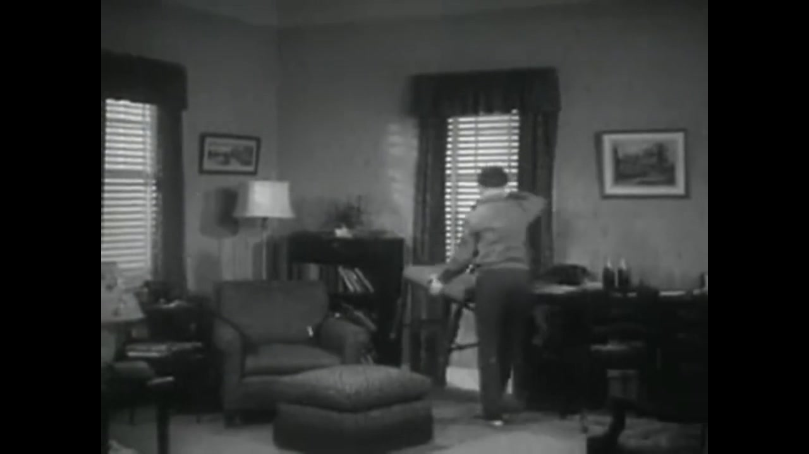

▶ Play Cut 01 (0:05.4–0:11.9)Cut 01 — Amateur Film New Jersey B (c. 1950)
What is on screen: A boy crosses a fixed-camera domestic room, carries a chair to the window, and climbs onto it.
NEARMATCH bridge: Opening domestic threshold: recorded human action before computational erasure.
Why chosen (Critic record): Praised by the blind critic ('at 0:00-0:12 a boy crosses a fixed-camera room, carries a chair to the window, climbs on it'); establishes ALLWAYS's foundational proposition: someone moves a chair at the edge of the frame.